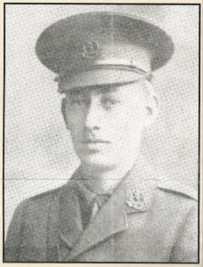
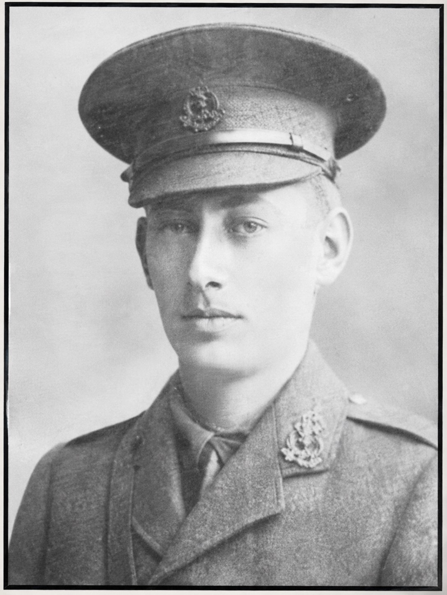

Harold Walter Tigar


Harold and Geoffrey Tigar - The Tigar brothers, Harold Walter and Geoffrey Herbert, were both educated at John Lyon School in Harrow and served during the First World War. Their military careers took different paths, with Harold killed in 1915 at Aubers Ridge and Geoffrey killed two years later during the fighting at Passchendaele.
Civilian Life - Harold Walter Tigar was born in Belgium in about 1893 and was the son of Walter and Mary Agnes Tigar of 112 Nibthwaite Road, Harrow. His father was a stock and share dealer on the London Stock Exchange. Harold was an Old Lyonian and also attended the school at Douai. Before the war he studied accountancy and passed his intermediate examination of the Incorporated Society of Accountants.
Military Life - Harold served with the Middlesex Regiment. He held a commission as Lieutenant in the 3rd Battalion but was serving at the front attached to the 2nd Battalion. On 9 May 1915, the 2nd Middlesex took part in the Battle of Aubers Ridge where the Army launched a massive, coordinated assault against entrenched German positions in northern France and Flanders. The 2nd Battalion, Middlesex Regiment formed a key part of the attacking force. As the men climbed over the parapet to advance toward the enemy trenches, they were immediately caught in a murderous, crossfire barrage of German artillery and heavy machine-gun fire. Tigar was killed alongside dozens of his fellow officers and hundreds of his men within the opening hours of the offensive. Because the battlefield was under constant, intense bombardment for months, his remains were never recovered or identified.
Harold was killed in action near Klein Zillebeke in the Ypres Salient at the age of 22. His remains were not recovered or identified, and he is commemorated on the Ypres (Menin Gate) Memorial.
Three brothers lost during the war years Research also records a third Tigar brother, Laurence Edward, who died in the final quarter of 1915. However, he is not recorded by the Commonwealth War Graves Commission or Imperial War Museums. It is likely that he was not in the armed services when he died. Sadly not without precedent, even within the context of bereaved families of John Lyon pupils, the First World War brought the deaths of three sons, Harold and Geoffrey in military service and a third son, Laurence. Two further sons survived the war, a younger brother Wilfred died in l 1966 age 65 and an older brother Frederick didn't die until 1954.